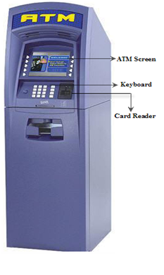
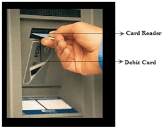

You can use an Automated Teller Machine (ATM) to withdraw money using your debit card. An ATM is open 24 hours a day for you. These instructions are for the first-time users of an ATM. It is assumed that you are using the Citibank ATM branch, MG Road, Bangalore. Read the instructions carefully that is displayed on the screen of the machine.
 PrerequisitesYou must have:
• A Citibank debit card.
• Sufficient money in your balance.
• A Personal Identification Number (PIN) given by the bank.
PrecautionsDo not:
• Show anyone your password.
• Lose your card.
• Forget your password.
Follow the instructions to withdraw money using an ATM:1. Insert your debit card and take it out.
2. Select Language.
3. Enter your PIN.
Note: The account information and the PIN are sent to the bank computer through the telephone network. When the account number and the PIN are validated you can proceed with the transactions, otherwise, you have to re-enter the PIN.
4. Select the account type, for example Savings/Current.
5. Select the type of transaction, for example here you can select Get cash.
6. Enter the required amount.
7. Select Yes, if you require a receipt.
8. Re-enter your card into the card reader and take it out.
9. Collect your money and the receipt.
10. Press Cancel after withdrawing your money.
Count your money.
Note: An ATM has a sensor to measure the thickness of each banknote, in addition to the banknote counting device. If two or more banknotes are stuck together, they will be sent back to the reject bin instead of being dispensed to you.
You have successfully withdrawn money from an ATM.